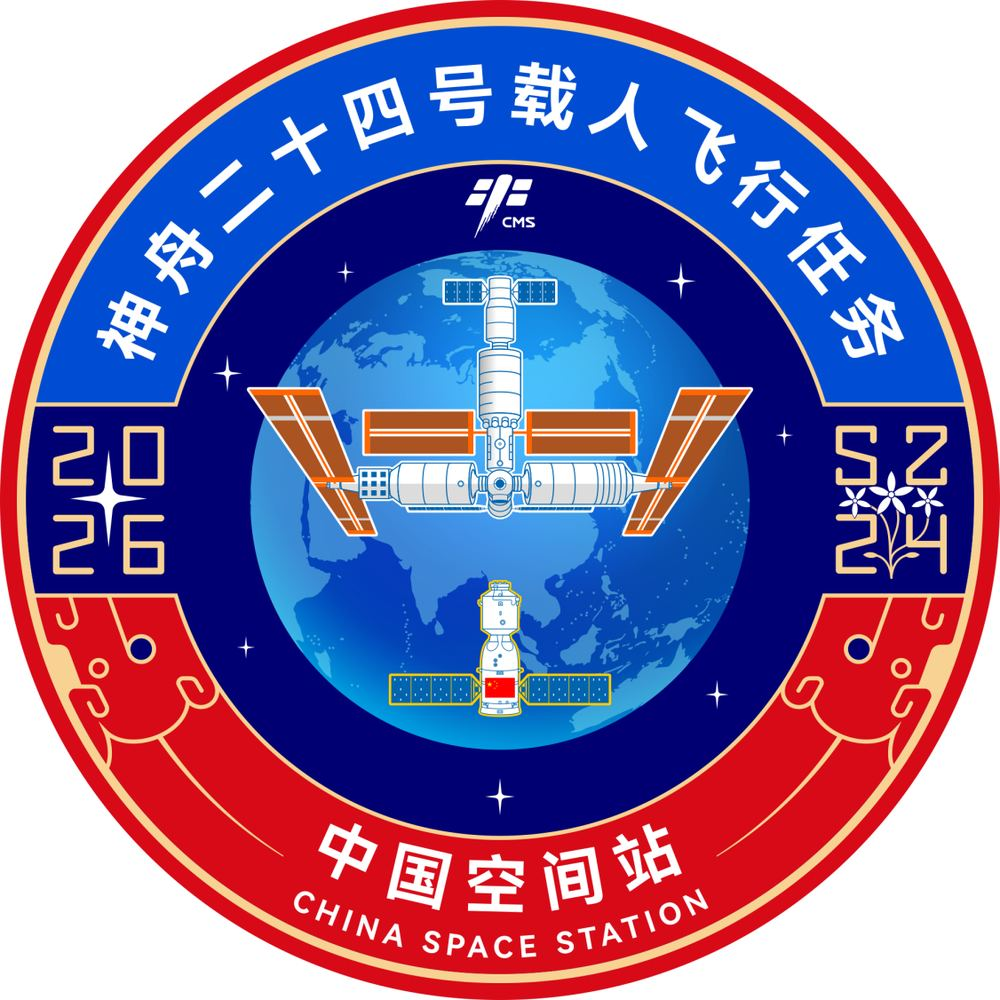

84科技/AI · 0101
神舟二十四号任务完成最后一次全区合练，发射场做好发射前各项准备
据央视新闻 21 日下午报道，神舟二十四号任务已完成最后一次全区合练，发射场各项准备就绪，计划近日择机发射。此次任务将有一名巴基斯坦航天员以载荷专家身份参加，完成短期在轨飞行后随神舟二十三号返回，这是中国载人航天史上首次中外航天员联合飞行，中国空间站也将迎来首位外籍航天员。
💡 点评首次中外联合飞行把载人航天从「国家级工程」推向国际合作的新阶段，载荷专家的身份安排也说明空间站应用正从实验走向常态化运营。
IT之家 · 原文 →